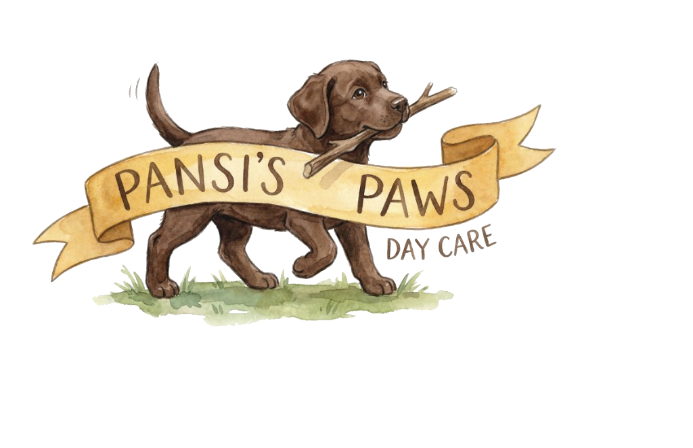
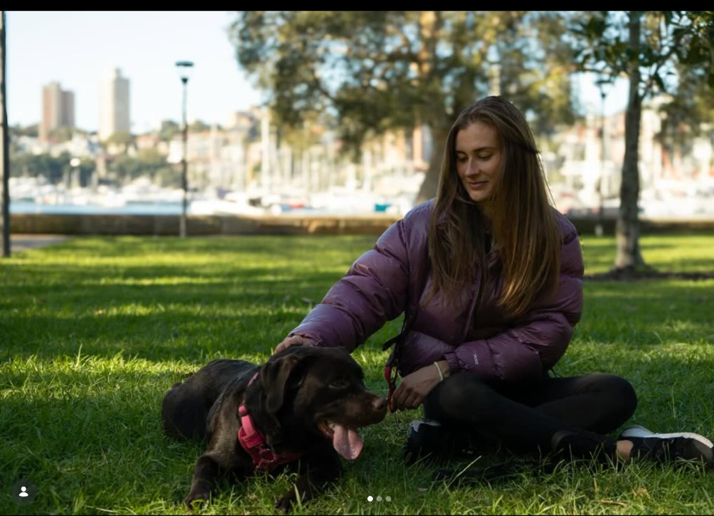
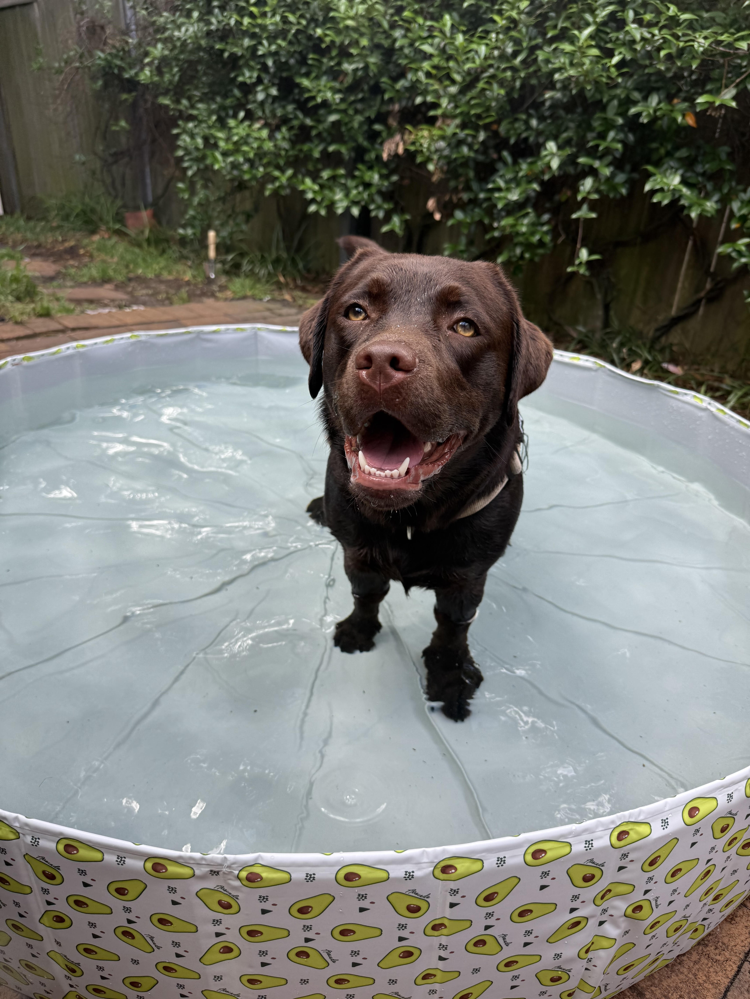

Pansi's Paw Home Daycare
A calm, secure home. Personalised care.
Small groups • Daily walks & enrichment • Senior dogs & medication welcome • Annandale, NSW

Meet Andressa & Pansi

Andressa
Founder of Pansi's Paw. Every dog is treated like family.

Pansi
Our 15-month-old labrador and the heart of our daycare.
Our Home Daycare
A calm and secure home setting. Small groups for personalised, attentive care. Daily walks and meaningful enrichment. We respect each dog's unique personality and routine—and keep you updated with honest, transparent communication.
Calm & Secure Home
Not a kennel—a real home. A calm and secure setting where we respect each dog's unique personality and routine. Every dog gets the attention and comfort they deserve.
Daily Walks & Enrichment
Meaningful enrichment and quality outings. Small groups for personalised, attentive care—so every pup gets the best experience.
Treats & Gentle Care
Quality treats and care, tailored to each dog. Honest, transparent communication with pet parents—regular updates so you feel confident and at ease.
We're insured and have first aid for pets.
Our Friends
A few moments from our walks.